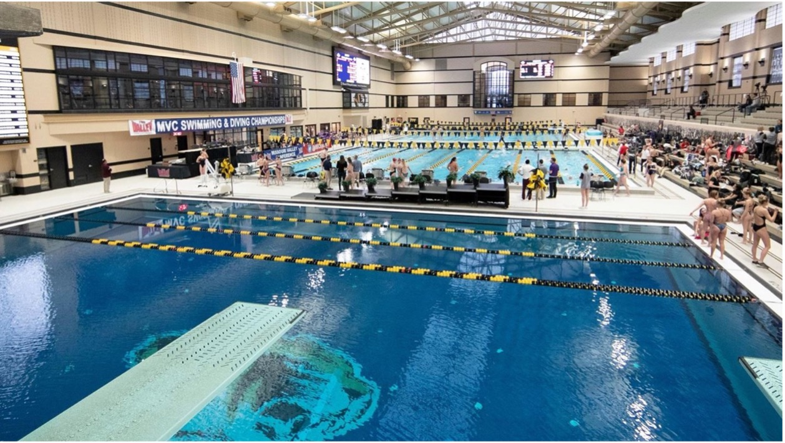
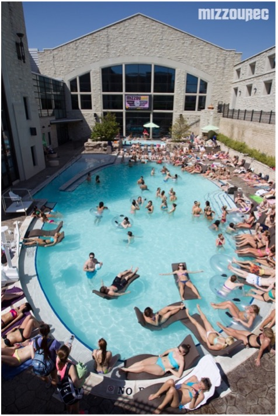
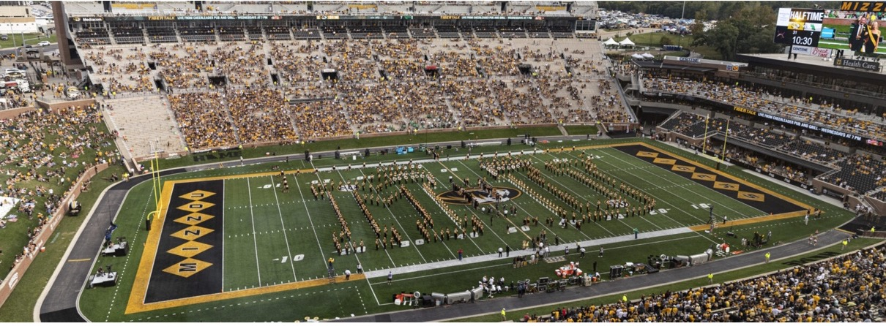
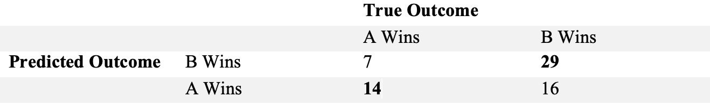

Projects and Experiences
MizzouRec Aquatic Lead
During my first Semester at Mizzou in September 2019, I joined the Team Mizzou staff at the Rec as a lifeguard.
After working in High School as a lifeguard it seemed like a natural fit as I already was Red Cross and CPR certified.
In early 2021 I would be promoted to an Aquatic Lead (manager) position. I would be responsible for managing up to 10 employees at once during the
day as well as the upkeep of all six bodies of water, including the Olympic Swimming Pool, in the Aquatic Center.

I also gained experience in working
with events and the Mizzou Swim Team in the running of sporting events and meets such as the SEC Swimming and Diving Championships. Events of this
magnitude assisted me in working in teams and understanding the logistics of how things get done, which were a huge help in my next job after leaving
the Rec after Fall Semester 2021.

Mizzou Football Equipment Manager
In January 2022 I reached out to the Mizzou Football Head Equipment Manager about a job working for the team and I was hired soon after. Day to day operations include doing laundry and moving practice equipment using trucks and Gators to and from different practice locations. There is also a significant amount of time given to preparing jerseys, helmets and shoulder pads for practices as well as in preparation for the season. As of the conclusion of the 2022 Spring Ball season, focus will now be on preparation for Fall Camp and then the 2022 season. I am hoping to make a big enough impact that I am selected for the travel squad for games this Fall, I have been committing lots of time for the foreseeable future. 
March Madness 2022 Predictive Model
Using data from the 2003 – 2019 March Madness tournaments, a logistic regression model was fit to predict the results of the 2021 and now the
2022 (pending) tournament. The data was organized as each line being a game where the two teams were randomly assigned team A and team B.
The regular season statistics, along with their seed and region, for each team were included and whichever team won the contest.
First, a factor variable was created representing whichever team won the game; 1 being that team A won the game and 0 being that team B won.
The following is the final model from the project: Let P(Y) be the probability that team A won the game, X1 be the difference in field goal
percentage between team A and B, X2 be the offensive rebounds per game by team A, X3 be the offensive rebounds per game by team B, X4 be turnovers
per game by team A, X5 be turnovers per game by team B, X6 be steals per game by team B, X7 be the seed of team A, and X8 be the seed of team B.
The logistic regression model is
ln(P(Y=1)/(P(Y=0))= β0 + β1X1 + β2X2 + β3X3 + β4X4 + β5X5 + β6X6 + β7X7 + β8X8
Where β0 is the intercept, β1 is coefficient for field goal percentage difference, β2 is the coefficient for offensive rebounds by team A, β3 is
the coefficient for offensive rebounds by team B, β4 is the coefficient for turnovers for team A, β5 is the coefficient for turnovers by team B,
β6 is the coefficient for steals by team B, and β7 and β8 are the coefficients for the seed of team A and B respectively. The model predicted the
2021 tournament games with a misclassification rate of 31.8%. Below is the confusion matrix of the 2021 tournament.
Full Report

Predicting Baseball Players’ Salaries Using the Past Year’s Statistics
In this analysis a multitude of rate stats as well as counting stats were employed to build models to attempt a prediction of player salary for the
2021 MLB season using 2020 statistics for all players with over 295 plate appearances. The findings were that the best variable for predicting a
player’s salary is their age. This is due to the nature of sports but more importantly the way contracts and careers are constructed in baseball
with teams holding the right to underpay players until deep into their career. Based solely off the 2020 simple batter’s statistics, salaries
cannot be predicted effectively at a high rate. Perhaps with a different year selected or the incorporation of advanced metrics such as launch
angle and bat-speed, a more accurate prediction could be made. A future trend that may be investigated is assessing only players entering free
agency rather than all those with a particular number of plate appearances.
Full Report